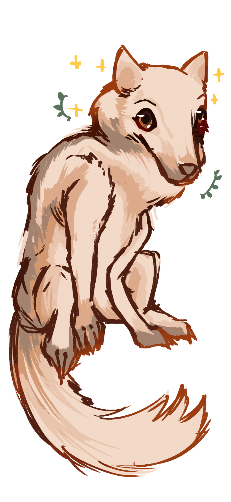

Uplifting Reassurance: someone who always offers a shoulder for others to lean on, and who grounds those around them with their knowledge and kindness. to understand and give sound advice. braving the unknown and uplifting all those you can along the way. those with this character trait have an affinity towards cute wolves~

thank you for your reassurance, micheal.
i was always afraid of university, and in some ways i think i still am. all of it felt so unknowable, and therefore, scary. i was afraid to share my art, because i was afraid that people would admonish me, at best. yet when i met you, i realized these fears were unwarranted when i met you. you're an incredibly kind and frankly wise person: i know that sounds silly, but i truly believe that.
whenever i talk to you or hear you talking about about design work, you always have such thoughtful points to say; it really shows how much you care for others, and how much attention you pay to the smallest of details (which in itself says a lot about how thoughtful you are to others). it always brightens my day whenever you sneak up on me on the 6th floor, or when i get to simply say hi to you when going to class. i will always hold the moments i have with you close to my heart.
you encourage me to speak my mind more, and connect more with other people. i think i've broken out of my social shell so much only because i felt inspired by you. and for that, i can't thank you enough either.
thank you for being my friend for all of these years, micheal. please have a restful break, and make sure to also take some time for yourself too. happy thanksgiving!
love, stephen